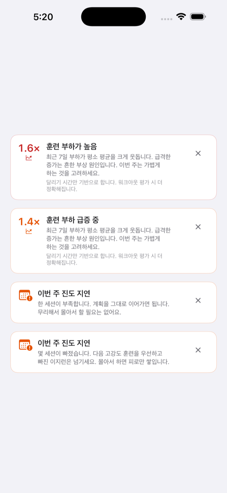

오늘 뛰어야 할 훈련이
한눈에
플랜만 주는 앱, 기록만 남기는 앱. RunCraft는 그 둘을 잇습니다 — 결승선을 지날 때마다 답이 기다립니다: 다음엔 무엇을 뛸 것인가.

문제는 노력 부족이 아니었습니다
정체된 러너는 게으른 게 아니라 추측하고 있는 겁니다. 그 추측이 드러나는 장면들입니다.
모든 러닝이 비슷하게 '적당히 힘든' 채로 끝난다
이지는 회복될 만큼 편하지 않고, 포인트는 빠를 만큼 신선하지 않습니다. 꾸준히 뛰어도 기록은 그대로입니다.
인터넷에서 찾은 플랜은 당신을 위해 쓰인 게 아니다
인터넷에서 받은 PDF는 남의 체력을 전제합니다. 거기 적힌 페이스는 조깅이거나 레이스이고, 어느 쪽인지도 알 수 없습니다.
거리를 늘리면서 아무 일 없기를 바라고 있다
늘리는 동안은 계속 괜찮습니다 — 어느 순간 아니게 될 때까지. 아프기 시작했을 땐 그 실수는 이미 3주 전 것입니다.
다 뛰고도 잘한 건지 알 수가 없다
워치는 8km를 44분에 뛰었다고 말합니다. 그게 오늘 뛰기로 했던 세션이었는지는 말해 주지 않습니다.
모든 상황에, 답이 있습니다
실제로 뛴 기록 하나에서, 모든 페이스로
레이스나 타임 트라이얼 기록 하나만 입력하세요. RunCraft가 그것을 VDOT 점수로, VDOT 점수를 모든 훈련 페이스로 바꿉니다. '이지'에 드디어 숫자가 붙습니다.
- Easy·Marathon·Threshold·Interval·Repetition 페이스
- 5K부터 마라톤까지 현실적인 기록 예측
- 체력이 오르면 페이스도 따라 이동 — 수동 재설정 불필요

오늘의 세션은 이미 준비되어 있습니다
주기화 스케줄은 레이스 당일에서 거꾸로 짜입니다. 백지에서 시작하는 아침은 없습니다 — 잠금 화면만 봐도 오늘은 이미 정해져 있습니다.
- 위젯으로 오늘의 세션을 한눈에
- 컨디션이 떨어지면 회복일을 자동 조정
- 레이스 예정이 없나요? 매주 간단한 루틴으로 달리면 됩니다
부끄러움이 아니라, 걷기에서 시작
모든 플랜이 5K에서 시작할 필요는 없습니다. 걷기·달리기 프로그레션은 지금 있는 지점에서 30분 연속까지 쌓아 올립니다.
- 걷기와 달리기를 번갈아, 당신에게 맞춘 시간으로
- 진행은 의지가 아니라 '주' 단위로
- Apple Watch가 없어도 OK — iPhone만으로 전체 러닝 안내
숫자가 아니라, 답을
모든 러닝은 '원래 그래야 했던 세션'과 비교해 평가됩니다 — 리더보드의 낯선 사람이 아니라.
- 1km 구간별 페이스와 심박수
- 계획 대비 노력 평가
- VDOT 변화는 일 단위가 아니라 월 단위로
그 증가 곡선을 대신 지켜보는 것
RunCraft는 급성:만성 부하 비율 — 이번 주 훈련량과 그동안 쌓아온 기반 — 을 지켜보다가, 그 급증이 부상이 되기 전에 말해 줍니다.
- 주간 부하 추세를 알기 쉬운 배너로 표시
- 위험 구간에 들어서면 미리 경고
- 80/20 체크로 이지 데이를 정직하게 이지하게

한 번 만들면, 손목 위에서 그대로
웜업, 반복, 회복, 쿨다운 — 끌어다 놓고 한 번의 탭으로 Apple Watch에. 적은 그대로 실행됩니다.
- 웜업·메인·회복·쿨다운 블록
- 스텝별 거리 또는 시간 목표
- 인터벌별 페이스 알림 설정

올릴 만한 카드 한 장
사진을 남길 만한 러닝도 있습니다. 직접 찍은 사진을 넣으면 RunCraft가 그 위에 기록을 얹어 줍니다 — 복잡한 대시보드 스크린샷은 필요 없습니다.
- 당신의 사진, 당신의 러닝, 그 위에 깔끔한 기록
- Instagram 스토리에 딱 맞는 사이즈
- 게시 전 미리보기

인터벌 도중은 계산하기 가장 나쁜 때입니다
계산은 그만, 달리기만
오늘의 워크아웃을 워치에서 시작하면 나머지는 RunCraft가 끌고 갑니다: 목표, 벗어나면 손목에 톡, 남은 개수까지. 집중은 러닝에 두세요.
- 실시간 페이스 목표와 달성 피드백
- 심박 존 표시, 벗어나면 햅틱 알림
- 인터벌 진행 상황 — 반복 횟수, 남은 거리
- 워치 페이스 컴플리케이션에 오늘의 세션 표시

iPhone이 세션을 실시간으로 미러링합니다
러닝 중에 폰을 꺼내면 같은 워크아웃이 그대로 있습니다 — 반복 횟수, 실시간 페이스, 심박 존이 손목과 동기화된 채로.
- 워치의 반복 진행 상황을 실시간 미러링
- 페이스·심박 존·케이던스를 한눈에
- 어느 기기에서든 일시정지 또는 종료

감이 아닌, VDOT 기반
위의 모든 페이스는 한곳에서 나옵니다: 잭 다니엘스의 VDOT — 코치들이 수십 년간 써 온 프레임워크입니다. RunCraft는 새로운 훈련 철학을 만들지 않습니다. 그 계산을 매일, 부탁하지 않아도 할 뿐입니다.
질문이나 피드백이 있나요?
리뷰 및 피드백
RunCraft가 출시되면 평점과 리뷰가 피드백을 전하는 가장 좋은 창구입니다 — 모두 읽습니다. support@marstudio.app 로 메일을 보내셔도 됩니다.
프레스
RunCraft에 대해 쓰시나요? 로고, 스크린샷, 소개 문구가 준비되어 있습니다. 프레스 킷 열기